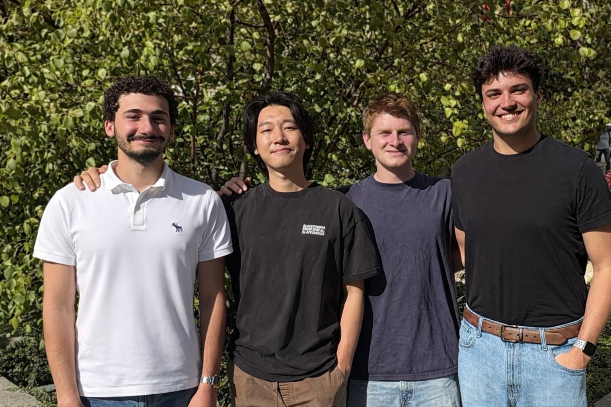
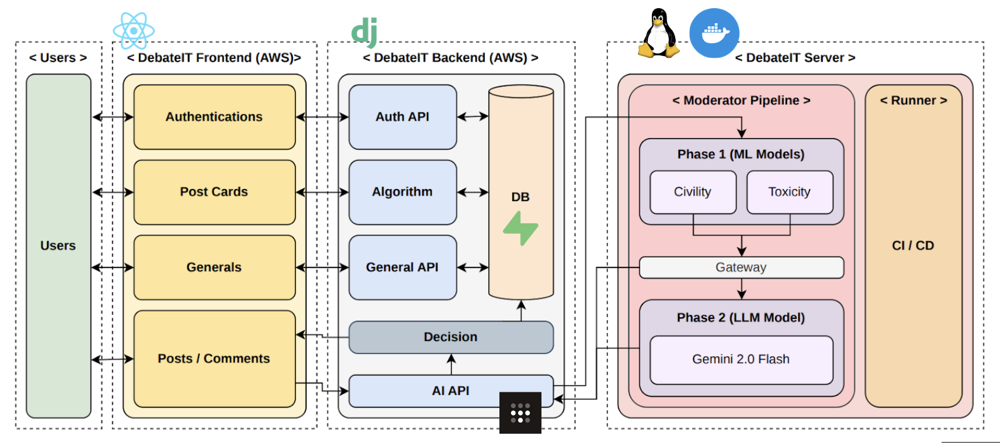
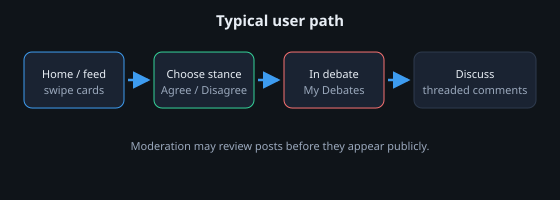

About DebateIt
DebateIt is a web platform for structured, civil debate. Participants discover topics, take a clear stance, and discuss in dedicated rooms—supported by moderation tooling so conversations stay on track.
Source code for this capstone project lives in a private repository. This brochure site is public and only links to the product you choose to deploy—not to the repo itself.
Our team

Problem we address
Online discussion often sprawls across feeds without clear positions, limits, or guardrails. It is hard to tell who is arguing for what, easy for threads to turn toxic, and difficult for communities to run fair, focused exchanges. DebateIt reframes discussion as joinable debates: each topic has defined sides, capacity limits, and a path from discovery (browsing or swiping debates) to participation (comments in a debate room).
The product also integrates automated content screening so teams can experiment with healthier norms at scale, while still allowing human moderation workflows where the course or deployment requires them.
What you can do in the app
Technologies
The stack follows a classic SPA plus API design. The browser client is a React application (Create React App) that talks to a Django backend with Django REST Framework. Data is stored in PostgreSQL for production-style deployments (SQLite is supported for local development). Authentication uses Django’s session-based flow. For toxic or policy-sensitive text, the backend can run a Hugging Face pipeline using the unitary/toxic-bert model, alongside human moderation views where enabled.


Product screenshots
Add two or three PNG or JPG screenshots from your deployed app (or local dev) so reviewers see the real UI. Save them under assets/ and reference them here—for example assets/screenshot-home.png.
Placeholder: insert <img src="assets/your-screenshot.png" alt="…" /> when ready.